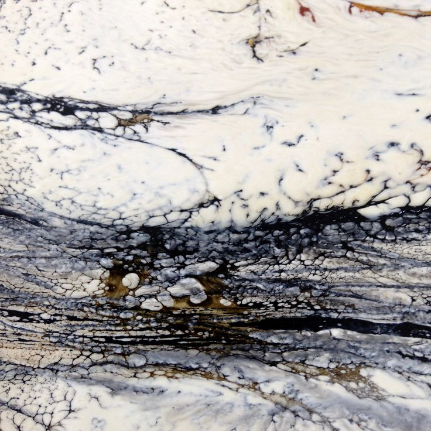
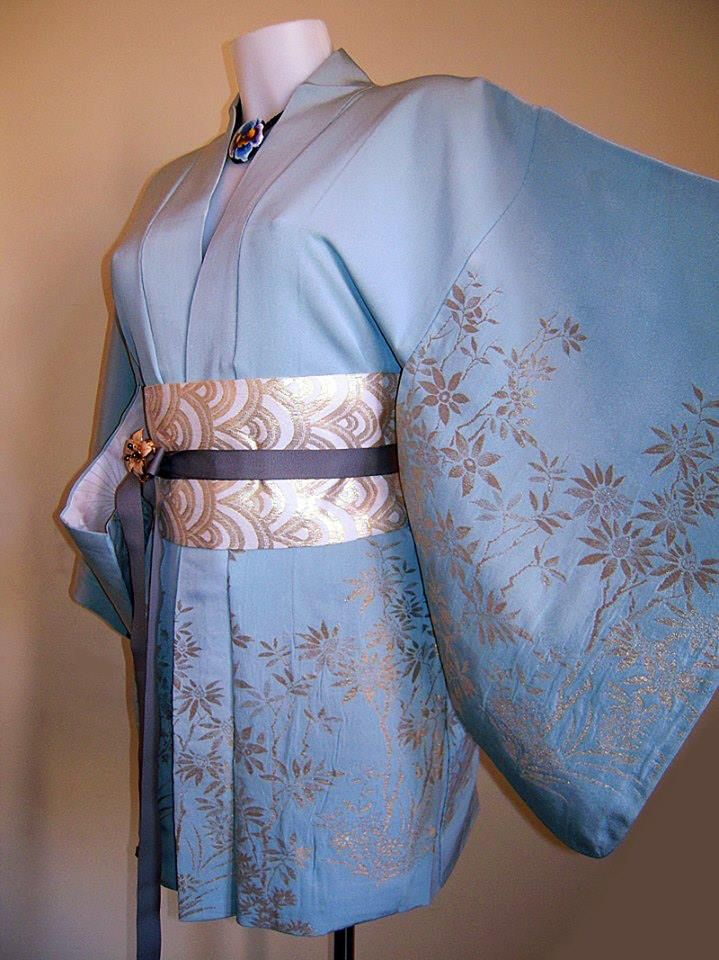
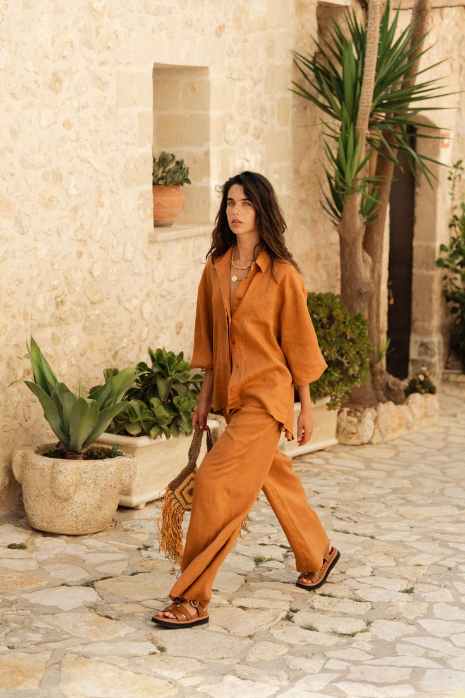
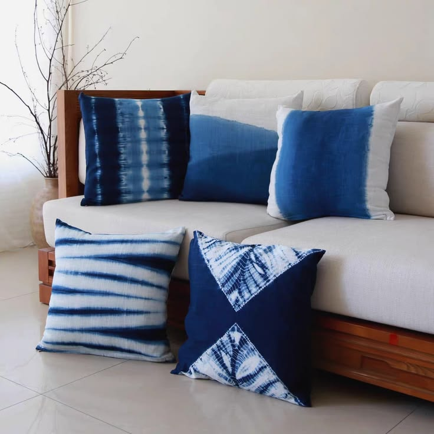
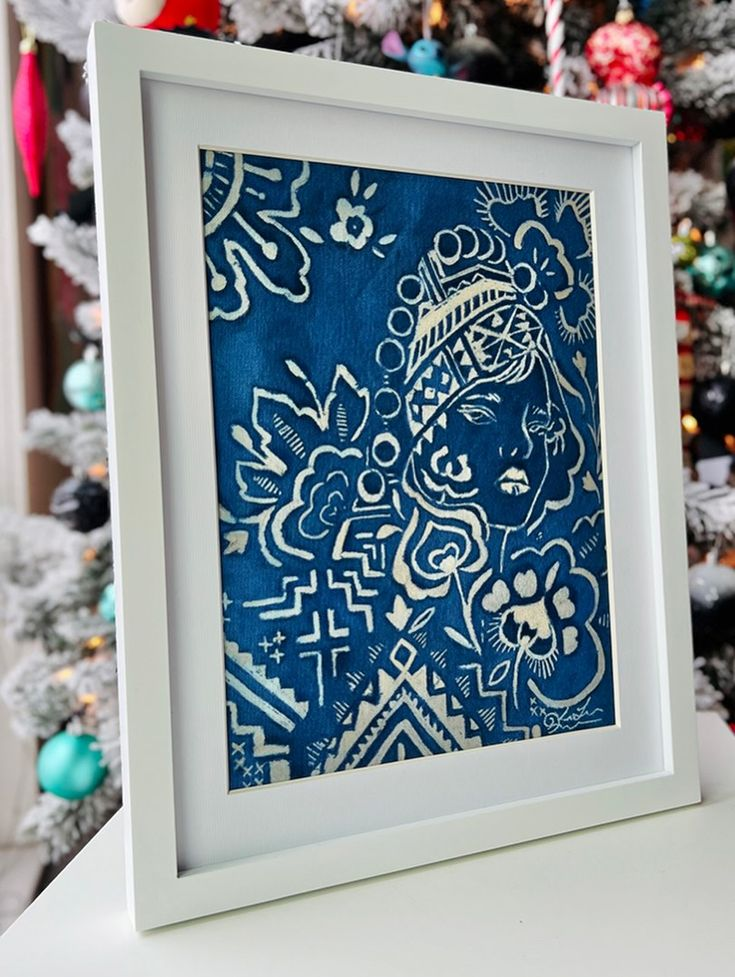

Vibrant Threads, Ancient Soul, Modern Dye Art.
Handcrafted Indonesian batik and Japanese shibori textiles. Drawn with molten wax, immersed in botanical vats, and sun-cured into living art.

The Art of Living Color
Slow seasonal foraging of wild turmeric, marigolds, and living indigo—crafted entirely without petrochemical salts.
Zero-Waste Liquor
Exhausted plant baths nourish our rooftop sanctuary garden.
Pure Virgin Beeswax
Organic forest beeswax and pine damar, melted and reused indefinitely.
Explore by Art Form
Fluid wearable silhouettes, tactile home textiles, and framed fine art tapestries.
From Molten Wax to Living Color
Five patient stages from raw natural fiber to finished textile artwork.

Motif Drafting
Freehand charcoal sketching on raw organic cloth.

Hot Canting Wax
Molten beeswax applied at 75°C to block dye.

Vat Immersion
Oxygenation dips in living fermented indigo vats.

Crackle Veining
Controlled wax cracking for signature marbling.

Boil-Out Reveal
Hot water wax removal and breezy courtyard sun-curing.
Featured Handcrafted Pieces

Cerulean Haori Kimono
Hand-painted wave resist dipped 14 times in Sukumo indigo.

Solar Strata Linen Shirt
Foraged marigold and madder root dip with crackle wax texture.

Itajime Cushion Trio
Geometric wooden clamp resist with iron & indigo bath.

Celestial Cosmos Panel
Museum framed mulberry silk with double-canting mandala.
Meet the Resident Artisans
Our atelier brings together multi-generational master dyers and modern textile artists united by respect for botanical chemistry.

Maya Lin
Master Batik Artisan"The copper canting demands complete presence of mind and breath."

Kenji Sato
Shibori Master"An indigo vat is alive—we don't control the blue, we nurture it."

Elena Rostova
Dye Chemist"Local tannin-rich oak gall mordants yield deep earth tones naturally."
Wear Art. Live With Color.
Create Something
Personal.
Choose an heirloom piece, book an afternoon around the dye vats, or commission bespoke textile artwork.